Photo Album

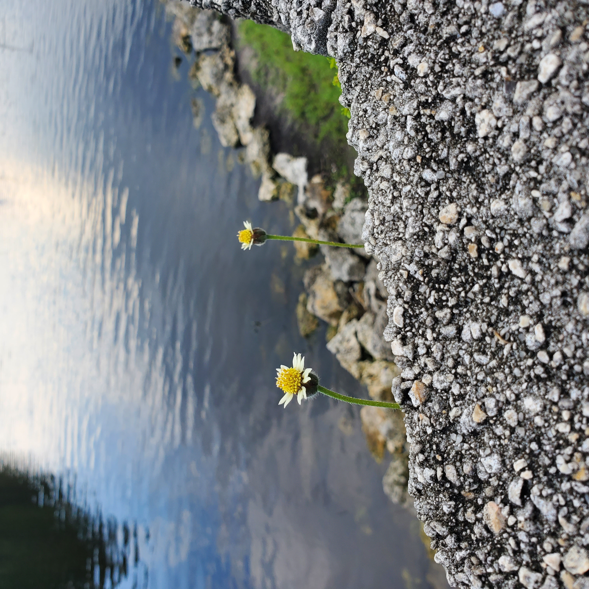
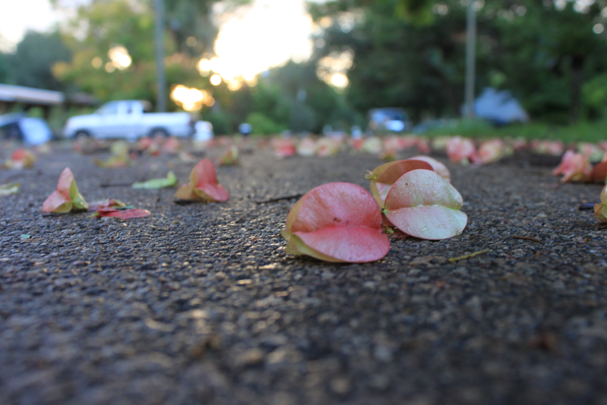
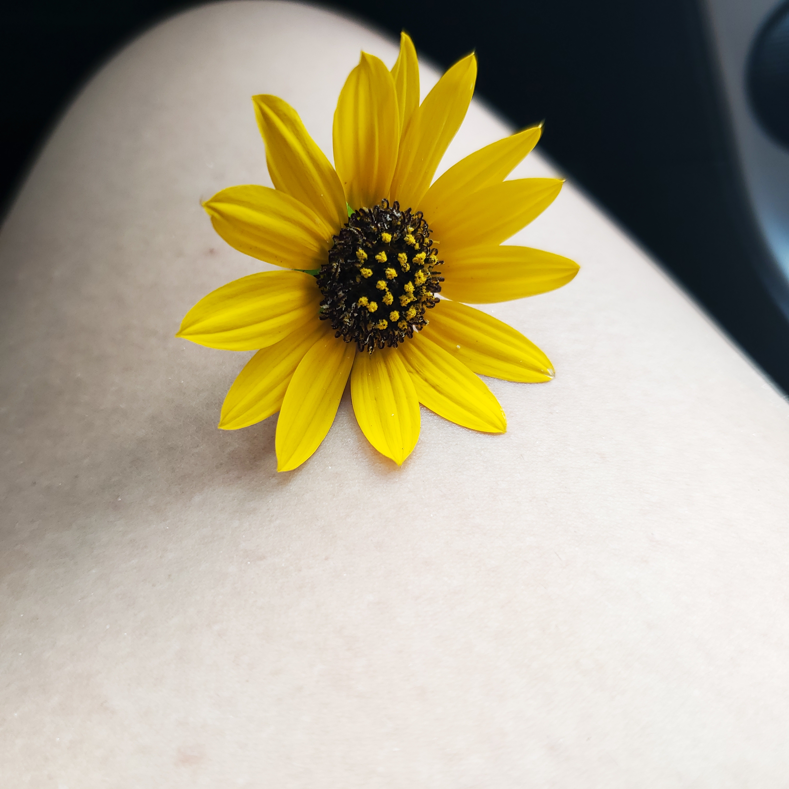
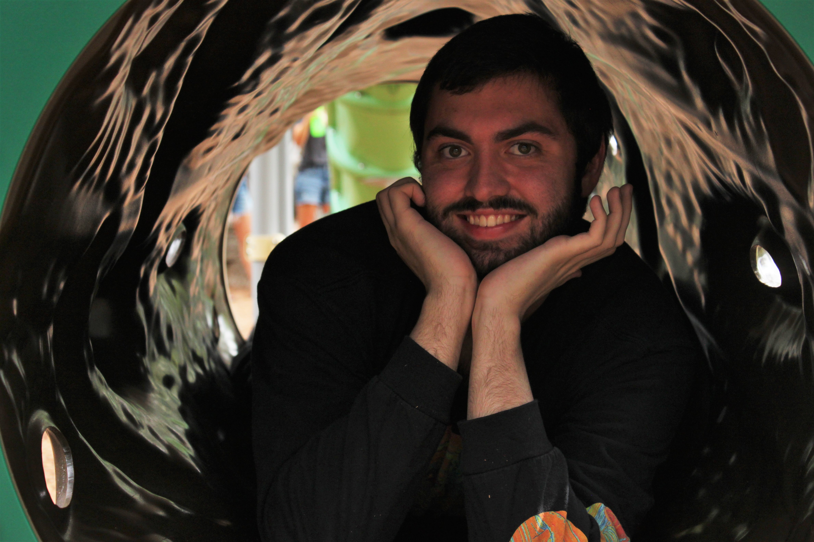


 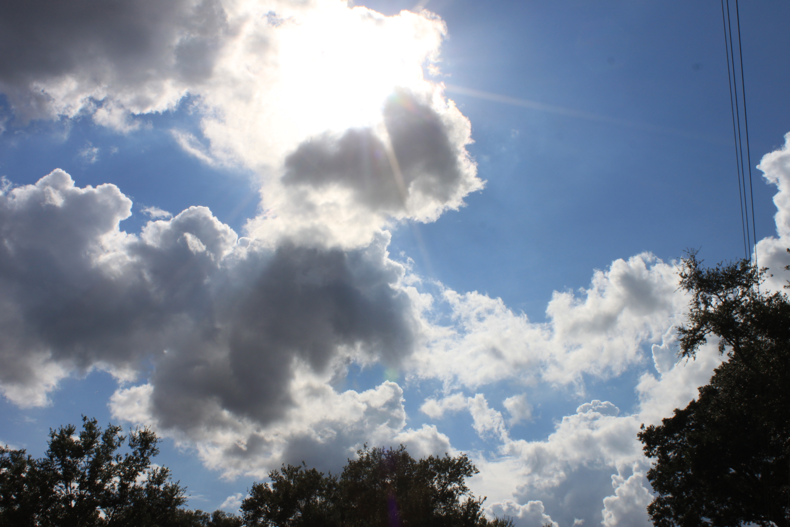
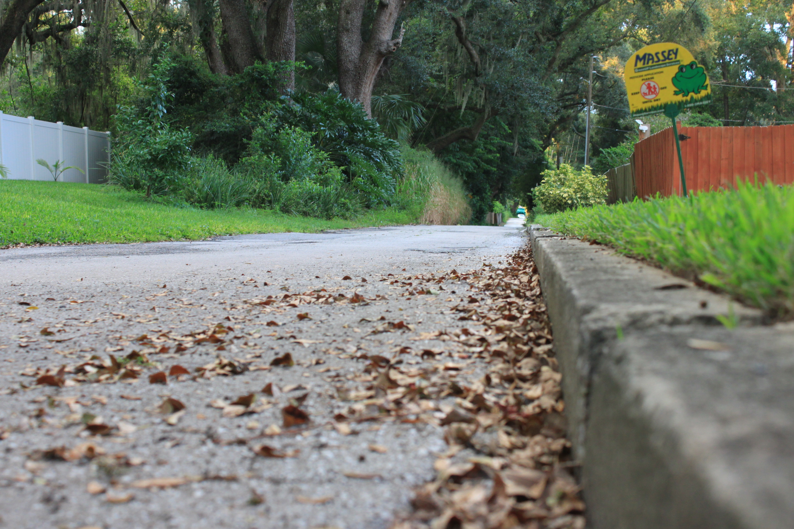
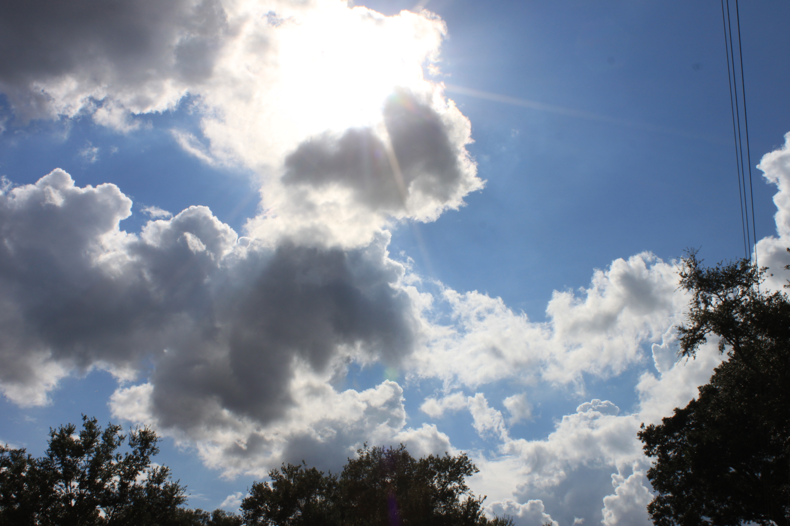
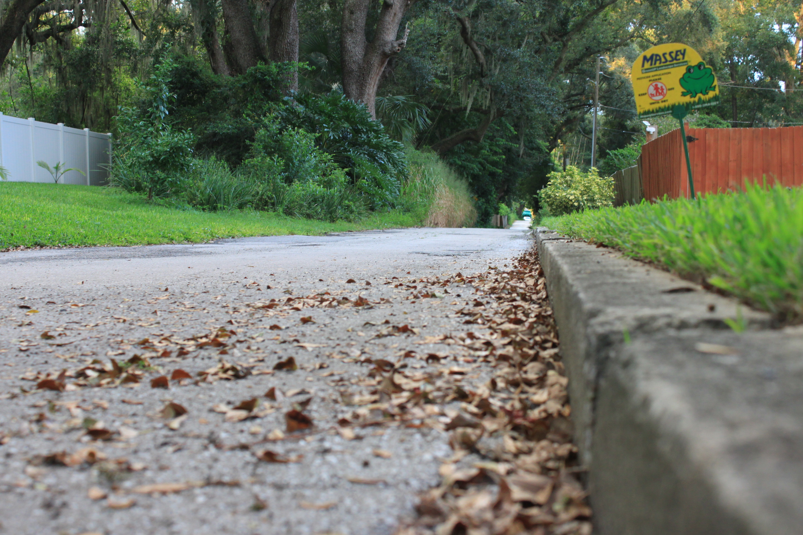
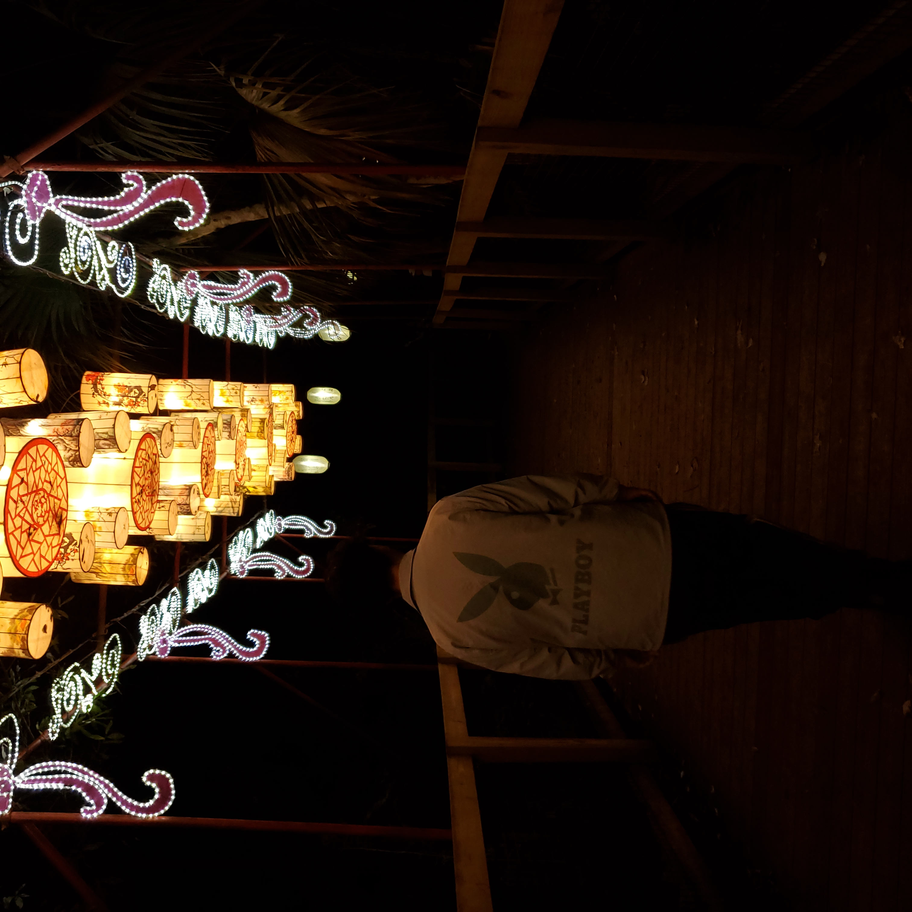


As you go along with my adventures I take; embracing what is around with the different point of views in natures scene. Played a little bit with the FOF and other filter lens to capture the timeed idea, there is nothing much too say...but I NAILED IT!
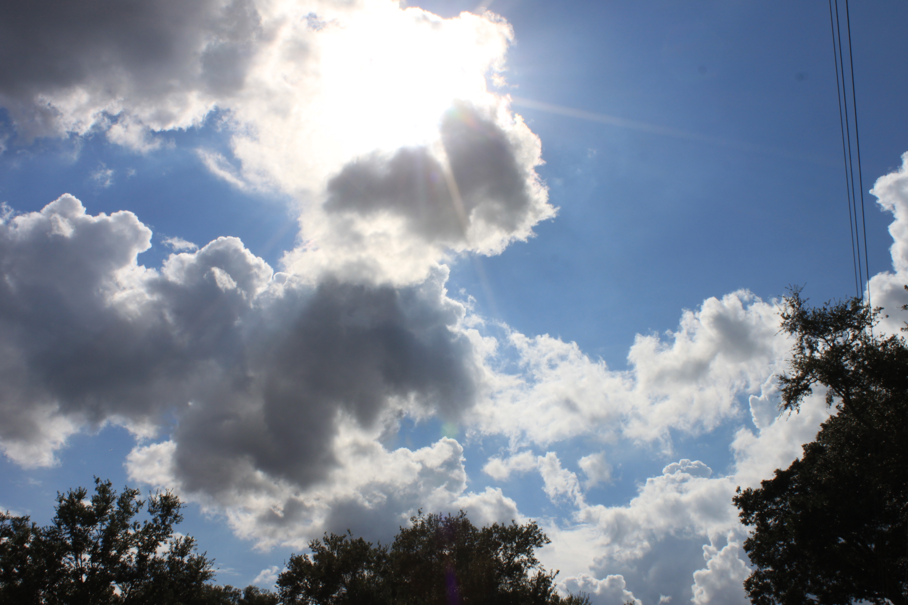
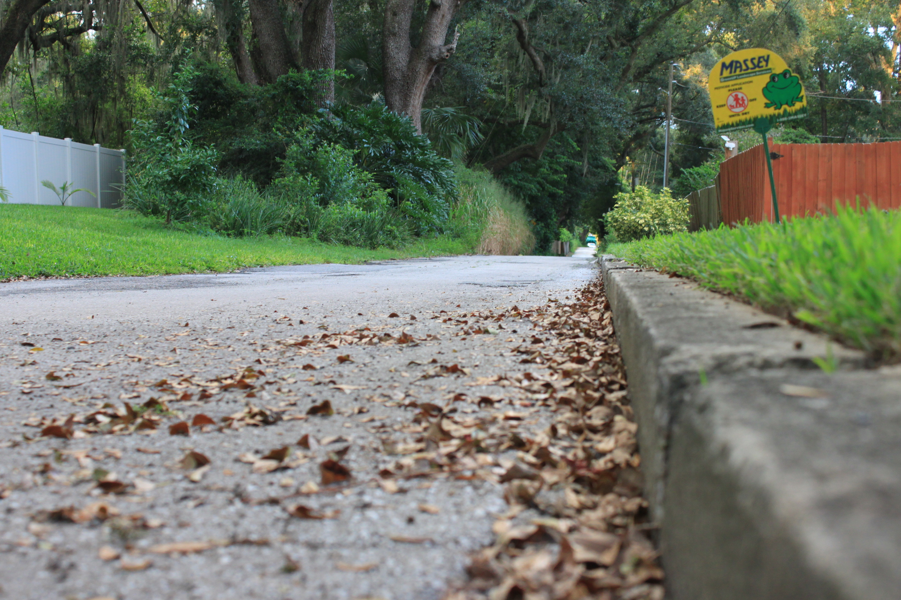